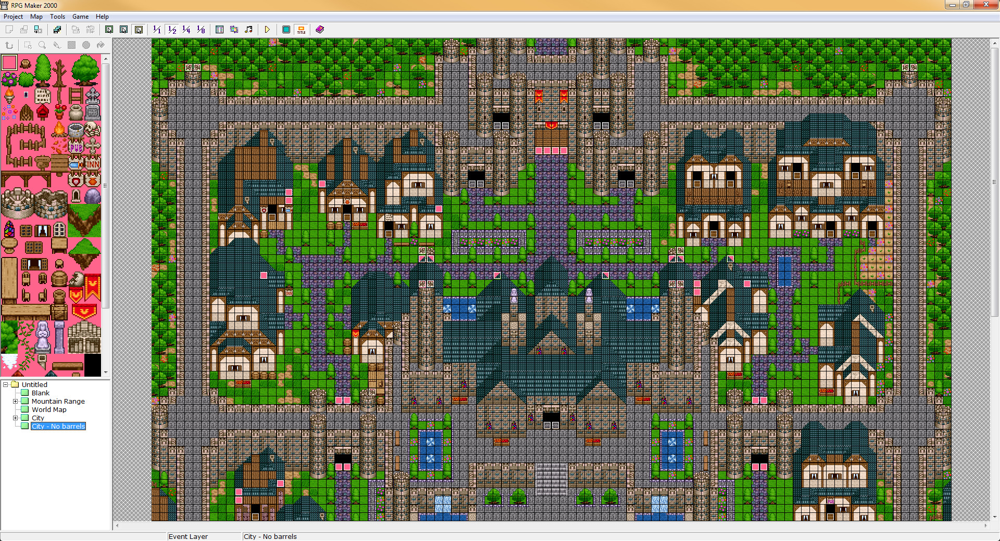
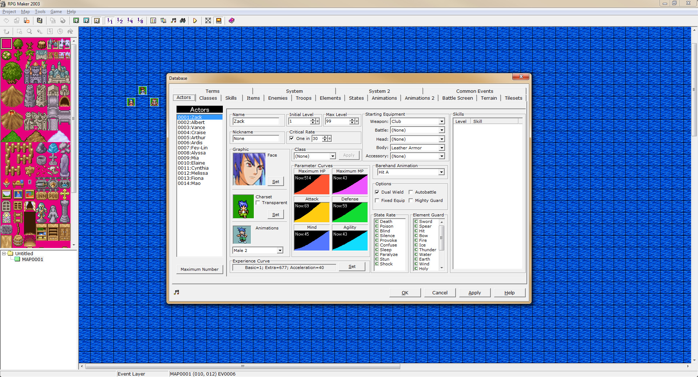

Unofficial RPG Maker 2000/2003 Specifications
Introduction
This repository aims to completely document the RPG Maker 2000 (RM2k) and RPG Maker 2003 (RM2k3) game engines, which were game engines developed by Enterbrain and published by ASCII Corporation, both of which are owned by Kadokawa Corporation. As their names imply, these engines were released in 2000 and 2003, respectively, and have largely superseded by newer versions of RPG Maker.
Despite this, they have a simplicity not present in newer versions of RPG Maker, and their library of games is plentiful, including popular games such as Yume Nikki, Ib, and Grimm’s Hollow.
About the Specifications
The specifications within this project aim to be accurate and comprehensive. Each covers a specific aspect of RM2k and RM2k3. These specifications are written in a technical style and are intended for developers, modders, and plugin makers.
Note: This project is in a draft state! All information is subject to change without notice.
This work is licensed under the Creative Commons Attribution-ShareAlike 4.0 International License. For more information, please consult the License page.
THIS PUBLICATION AND THE INFORMATION HEREIN IS PROVIDED “AS IS”, WITHOUT WARRANTY OF ANY KIND, EXPRESS OR IMPLIED, INCLUDING BUT NOT LIMITED TO ANY AND ALL WARRANTIES OF MERCHANTABILITY, FITNESS FOR PARTICULAR PURPOSES, AND NONINFRINGEMENT OF THIRD PARTY RIGHTS.
Terminology
This pages lists and defines some of the terminology that may be encountered within this site.
| Term | Definition |
|---|---|
| RM2k | RPG Maker 2000. |
| RM2k3 | RPG Maker 2003. |
| RM2k/3 | Refers to both RPG Maker 2000 and RPG Maker 2003. |
| Runtime | The program(s) used to play RPG Maker games. This mainly refers to the program RPG_RT.exe. |
| Editor | The editor used to create and modify RM2k/3 games and maps. |
| LCF | A tag-based binary format used by some RM2k/3 files. |
RPG Maker 2000/2003 Editor Overview
 
Byte Order
All binary files (i.e. XYZ and Lcf files) are assumed to be using little-endian byte order: the least significant byte is stored first, and the most significant byte is stored last.
For example, the 32-bit integer 0x456E7120 would be stored as 20 71 6E.
Data Types
The following are all of the data types that may be present within one of RM2k/3’s custom file formats.
All types may be appended with [n] to denote a contiguous array of said type, where n denotes the number of elements.
For example, U8[4] denotes a contiguous array of four unsigned 8-bit integers.
Basic Data Types
These are the basic data types that will be taken as primitive. The reader is assumed to already be familiar with these data types.
Integer Types
Signed integers are represented in the usual two’s complement format.
| Type | Description |
|---|---|
U8 | An unsigned 8-bit integer. |
U16 | An unsigned 16-bit integer. |
U32 | An unsigned 32-bit integer. |
BOOL | An unsigned 8-bit integer acting as a boolean (0 is false; 1 is true). |
FLAG | An unsigned 8-bit integer that acts as a flag/toggle. |
EINT | A 7-bit encoded integer. See Encoded Integers. |
Flag Values
FLAG fields may have the following values.
| Type | Value | Description |
|---|---|---|
| Inherit | 0 | Inherit value from parent. |
| Allow | 1 | Allow/enable flag. |
| Forbid | 2 | Forbid/disable flag. |
Encoded Integers
Lcf files make extensive use of 7-bit encoded integers to cut down on file size. These integers have a variable storage size, unlike the more common fixed-length formats. Ideally, they will only take up the minimum number of bytes needed to encode their value.
For example, 123456 should only take up three bytes.
Only the lower seven bits of an encoded integer will contribute to its overall value; the eighth (high) bit indicates whether or not the there is another byte that should be read, decoded, and added to the overall value.
Below is some pseudocode for reading and decoding these encoded integers into a 32-bit signed integer.
Note: the code below makes no assumption on the size of the EINT which may not be efficient if the exact size is known,
and the code does not perform any sort of error checking.
i32 read_encoded_integer(reader) {
i32 result = 0;
while true {
u8 next_byte = reader.read_u8();
result <<= 7;
result |= (next_byte & 0x7F) as i32;
if (next_byte & 0x80) == 0 {
break;
}
}
return result;
}
Floating-Point Types
These are the usual IEEE floating-point types.
| Type | Description |
|---|---|
F32 | A 32-bit floating-point number. |
F64 | A 64-bit floating-point number. |
Compound Data Types
Compound data types are built from the basic data types described above. These correspond to structures/records in many programming languages.
STRING Type
The STRING type represents a length-prepended string of characters. These are used to store textual data.
When present within a tag of an Lcf file, the string’s length will not be present. Instead, the tag’s size field should be used as the string’s length.
When present within a text file, this type is simply a sequence of characters with no explicit length.
For an example, see the GameTitle field of the configuration file format.
| Field | Type | Description |
|---|---|---|
| Length | EINT | The length of the string in bytes. |
| Data | U8[Length] | The characters that make up the string. |
Note: Strings have no standard encoding, and the official Runtime performs little to no error checking; the operating system’s locale is used. (Japanese games will typically use Shift JIS.)
This is lack of regularity is likely due to RM2k/3 originally being a Japanese-only engine that only received an English port years later; Shift_JIS was assumed to be the encoding of choice. This has resulted in various different encodings being used across RM2k/3 games, although UTF-8 has become dominant for modern games.
LIST Type
The LIST type represents an ordered list of elements. Notation-wise, this will always be followed by another type to
indicate what type the elements are.
This is essentially an array with the caveat that, when stored in a binary file, all elements are to be preceded by their 1-based index and followed by an End Tag.
For example, suppose L is of type LIST U8 with the elements 0, 25, 50, 75, and 100, respectively.
When stored in an Lcf file, L should be laid out as follows:
1 0 0 2 25 0 3 50 0 4 75 0 5 100 0
Notice how the elements are stored in their usual way while being sandwiched between their 1-based index and an end tag (0).
DATE Type
The DATE type represents a date and time.
This type corresponds to the TDateTime type found in Delphi and other Pascal variants.
| Field | Type | Description |
|---|---|---|
| Date | F64 | The numeric encoding of the date and time. |
The Date field is stored such that the integral part is for days and the fractional part is for the time of day.
Note: Timezone and other considerations are ignored; DATE only stores raw day and time values.
RGB Type
The RGB types represents a color with three color values: red, green, and blue.
| Field | Type | Description |
|---|---|---|
| Red | U8 | The amount/intensity of red. |
| Green | U8 | The amount/intensity of green. |
| Blue | U8 | The amount/intensity of blue. |
Configuration File Specification
Introduction
The RPG_RT.ini configuation file provides basic start-up information for RM2k/3 games.
It’s used by both the RM2k/3 Editor and Runtime: the Editor will read this file on startup and modify it when closing,
and the Runtime will only read it on startup.
This file is not required, but, if present, should always live within the same directory as the RM2k/3 Runtime. If the file is not present or fields are omitted, the RM2k/3 Runtime will use specific default values when necessary.
Configuration File Structure
RPG_RT.ini is a text file that follows the INI format.
The following table describes the overall structure of the configuration file. The fields are in no particular order and may be omitted.
| Field | Type | Default Value | Description |
|---|---|---|---|
| GameTitle | STRING | “Untitled” | The title of the game’s window. |
| MapEditMode | UINT | 0 | The last layer-editing mode used. |
| MapEditZoom | UINT | 0 | The last zoom level used. |
| FullPackageFlag | BOOL | 0 | Skip loading a runtime package. |
If a field is missing or has an invalid value, then the Runtime will use the field’s specified default value instead.
GameTitle determines the title of the Runtime’s window.
MapEditMode indicates the last layer-editing mode used when editing the game in the engine’s Editor. See Map Edit Modes.
MapEditZoom indicates the last zoom level used when editing the game in the engine’s Editor. See Map Edit Zooms.
FullPackageFlag determines whether or not the Runtime should attempt to load a runtime package before running the game. See Runtime Package.
Map Edit Modes
These are the edit modes for every valid value of MapEditMode. Each mode corresponds to a layer within the Editor.
| Value | Description |
|---|---|
0 | Lower tile layer mode. |
1 | Upper tile layer mode. |
2 | Event layer mode. |
Map Edit Zooms
These are the zoom levels for every valid value of MapEditZoom. Each mode corresponds to a zoom level (view ratio) within the Editor.
The larger the number, the more zoomed out the Editor will be.
| Value | Description |
|---|---|
0 | 1:1 view ratio. |
1 | 1:2 view ratio. |
2 | 1:4 view ratio. |
3 | 1:8 view ratio. |
Runtime Package
Runtime packages are installed on the player’s machine and provide default assets for games to use; games that make use of a runtime package will not work properly if the package is not installed on the user’s machine or if they’re not loaded by the runtime. This is done to keep games from distributing the same set of assets, potentially reducing the amount of disk-space games take up.
If a game does not make use of a runtime package, then FullPackageFlag may be set to 1 to allow the Runtime to skip loading
a runtime package, thereby improving startup performance and not requiring one to be installed. Otherwise, this field should be
set to 0 to instruct the runtime to attempt to load a runtime package.
Official runtime packages for RM2k/3 can obtained from the official website.
Example Configuration File
The following is an example RPG_RT.ini file.
[RPG_RT]
GameTitle=My Game
MapEditMode=2
MapEditZoom=0
FullPackageFlag=1
Runtime: This file will result in a Runtime window titled “My Game”, and the Runtime will not attempt to load a runtime package.
Editor: When this file is loaded by the RM2k/3 Editor, the edit mode will be set to the event layer (2), and the zoom mode will be 1:1 (0).
XYZ Image Specification
Introduction
The XYZ image format (.xyz) is a custom image format used by the RM2k/3 Editor and Runtime.
This format is palette-based and stores three 8-bit color channels (red, green, and blue) for a total of 24 bits per pixel.
RM2k/3 uses this format used alongside more conventional formats, such as BMP and PNG.
XYZ File Structure
XYZ files are stored in binary format.
The following table describes the overall structure of an XYZ file.
| Field | Type | Description |
|---|---|---|
| Signature | U8[4] | The file’s signature; this should always be “XYZ1” in ASCII. |
| Width | U16 | The width of the image in pixels. |
| Height | U16 | The height of the image in pixels. |
| Palette | RGB[256] | The image’s color palette. |
| PixelData | U8[Width * Height] | The image’s pixel data. |
Note: The Palette and PixelData fields are compressed using the zlib compression algorithm;
all data after the first eight bytes must be decompressed before use. This may be accomplished by using the zlib library.
Every value within the PixelData array is merely an index into the Palette.
That is, starting from the image’s top-left and progressing left-to-right, top-to-bottom, every pixel is represented by an index into the Palette array.
Moreover, because the Width and Height fields are U16, the maximum size of an XYZ image is 65535 x 65535 pixels.
LCF Files
Many of the external files used by RM2k/3 follow a custom binary format called LCF. This format uses a tag system for storing its contents, similar to Adobe SWF files.
Specifically, all LCF files contain some sort of header data (signature, date, etc.) followed by a series of tagged data blocks. All tags - except the End Tag - share the same format. This structure allows tags to be easily inserted, removed, and/or modified.
Tag Format
All tags begin with a tag type and a tag size field followed by tag-specified data:
| Field | Type | Description |
|---|---|---|
| TagType | EINT | An ID that “uniquely” determines a tag. |
| TagSize | EINT | The size in bytes of the data to follow. |
The TagType field “uniquely” determines the kind of tag being dealt with. This ID is only unique within a particular context;
for example, it may be the case that a tag dealing with music and a tag dealing with enemies share the same ID.
However, said tags will never be used within the same context/structure and thus can be distinguished from each other.
Following the above fields is zero or more fields depending on the tag. The TagSize contains the total size in bytes of the
fields to follow. This does not include the TagType field nor the TagSize field itself. This can be helpful when looking
for or modifying specific tags - unwanted tags can be skipped by simply reading then discarding TagSize number of bytes
after first reading the above two fields.
Example Tag
As an example, consider the hypothetical tag that deals with playing a song:
| Field | Type | Description |
|---|---|---|
| TagType | EINT | An ID that “uniquely” determines a tag. |
| TagSize | EINT | The size in bytes of the data to follow. |
| SongID | EINT | The unique ID of the song to play. |
| Volume | U8 | Volume to play the song at. |
| Tempo | U8 | Tempo to play the song at. |
The TagType field would have a “unique” ID, say 15.
Since Volume and Tempo take up 2 bytes, the TagSize field would have a value of 2 + the size of SongID in bytes.
This tag could easily be skipped in the following way: first, read TagType and TagSize, then read TagSize number of bytes and discard them.
Common Tags
Below are various tags that are shared between the different LCF file formats.
For more information on tags, please consult the LCF page.
End Tag
Marks the end of a structure, tag, or LIST.
This tag only has an ID field. Because of this, when stored in a binary file,
this tag will be stored as a U8 with a value of 0.
| Field | Type | Description |
|---|---|---|
| TagID | EINT | This will always be 0. |
LCF Map Tree File Specification
Introduction
LCF Map Tree (LMT) files are used to store map properties, game start information, and map orderings for RM2k/3 games.
RM2k/3 games have a single LMT file: RPG_RT.lmt. This should always be located within the same directory as the RM2k/3 Runtime (i.e. RPG_RT.exe).
This file is used in both the RM2k/3 Editors and Runtimes.
LCF Map Tree File Structure
LMT files are stored in binary format.
The following table describes the overall structure of an LMT file.
| Field | Type | Description |
|---|---|---|
| Signature | STRING | The file’s signature; this should always be “LcfMapTree”. |
| MapInfoCount | EINT | The number of map info structures present. |
| MapInfos | Map Info[MapInfoCount] | An array of map info structures. |
| MapOrderCount | EINT | The number of map orderings present. |
| MapOrders | EINT[MapOrderCount] | The hierarchical orderings of a game’s maps. |
| ActiveNode | EINT | The ID of the last saved/edited map. |
| MapStart | Map Start | Structure containing game start information. |
All maps are arranged in a hierarchy and are children to the first map in the MapInfos array called the root map.
This root map is not meant to be playable and merely acts as the default parent to all top-level maps in the hierarchy.
In older versions of the RM2k/3 Runtimes, the name of the root map was used to determine the name of the Runtime’s window.
This functionality has since been deprecated in favor of a configuration file.
ActiveNode is used by the RM2k/3 Editors to keep track of the last saved/edited map.
This allows the Editor to automatically open the last edited map on startup.
Map Info Structure
The following table describes the layout of Map Info structures.
Note: In practice, not all of the following tag-based fields will be present. This is presumably to reduce the overall size of LMT files. If a field is missing, then its specified default value should be used.
| Field | Type | Default Value | Description |
|---|---|---|---|
| MapID | EINT | Always present. | The map’s unique ID. 0 is always the root map’s ID. |
| MapName | Map Name Tag | Always present. | The map’s name. |
| ParentID | Parent ID Tag | 0 | The ID of a map’s parent. 0 means it’s a top-level map (root is parent). |
| Indentation | Indentation Tag | 1 (0 if root) | The map’s hierarchical indentation; it indicates how deep it is in the hierarchy. See the example hierarchy. |
| MapType | Map Type Tag | Map (1) | The type of map. |
| EditPosX | Edit Position X Tag | 0 | The editor’s last x-position when the map was last edited. |
| EditPosY | Edit Position Y Tag | 0 | The editor’s last y-position when the map was last edited. |
| EditExpanded | Edit Expanded Tag | False (0) | Whether or not the map was expanded in the editor’s tree view (children were visible). |
| MusicType | Music Type Tag | Event (1) for top-level maps; Inherit (0) for child maps. | How map’s background music should be played. |
| Music | Music Tag | See tag’s section. | The map’s background music and its playback settings. |
| BackgroundType | Background Type Tag | Terrain (1) for top-level maps; Inherit (0) for child maps. | The type of background to display while in combat. |
| BackgroundName | Background Name Tag | backdrop or an empty string | The filename of the combat background. |
| TeleportFlag | Teleport Flag Tag | Allow (1) for top-level maps; Inherit (0) for child maps. | Determines whether or not teleporting out of the map is allowed. |
| EscapeFlag | Escape Flag Tag | Allow (1) for top-level maps; Inherit (0) for child maps. | Determines whether or not escaping out of the map is allowed. |
| SaveFlag | Save Flag Tag | Allow (1) for top-level maps; Inherit (0) for child maps. | Determines whether or not saving is allowed within the map. |
| Encounters | Encounters Tag | No random encounters; e.g. an empty array/list. | All possible (random) combat encounters that can appear within the map. |
| EncounterSteps | Encounter Steps Tag | 25 | The likelihood of having a random encounter. |
| AreaRectangle | Area Rectangle Tag | [0, 0, 0, 0] | The size of a map area measured in pixels. |
| End | End Tag | Always present. | Indicates the end of the structure. |
Map Hierarchy
All maps of an RM2k/3 game are arranged in a parent-child hierarchy where the root map is at the top of the hierarchy.
Below is an example of such a hierarchy that is intended to help illustrate some of the fields of the Map Info structure.
. My Game (root; indentation=0)
+-- Map 1 (parent=0; indentation=1)
| +-- Map 2 (parent=1; indentation=2)
| | +-- Map 5 (parent=2; indentation=3)
| +-- Map 4 (parent=1; indentation=2)
+-- Map 3 (parent=0; indentation=1)
Notice that the maps are not required to be in sequential order. Map orderings are determined by the MapOrders field.
Additionally, the ordering of the maps are mainly used by the editors and don’t necessarily reflect the actual in-game order.
Map Start Structure
The following table describes the layout of the Map Start structure.
This structure specifies the maps and positions the player and vehicles should spawn at when a new game is created.
All x and y positions are measured in map tiles.
Note: In practice, not all of this structure’s tag-based fields will be present. This can happen when the player or vehicles were not given a starting position within the game (i.e. they’re not used). If the player is not assigned a starting position, the RM2k/3 Runtime will raise an error when attempting to play.
| Field | Type | Description |
|---|---|---|
| PartyMapID | Party Map ID Tag | The ID of the map the player should initially spawn in. |
| PartyX | Party X Tag | The x-position the player should spawn at in their starting map. |
| PartyY | Party Y Tag | The y-position the player should spawn at in their starting map. |
| SkiffMapID | Skiff Map ID Tag | The ID of the map the skiff vehicle should initially spawn in. |
| SkiffX | Skiff X Tag | The x-position the skiff should spawn at in its starting map. |
| SkiffY | Skiff Y Tag | The y-position the skiff should spawn at in its starting map. |
| ShipMapID | Ship Map ID Tag | The ID of the map the ship vehicle should initially spawn in. |
| ShipX | Ship X Tag | The x-position the ship should spawn at in its starting map. |
| ShipY | Ship Y Tag | The y-position the ship should spawn at in its starting map. |
| AirshipMapID | Airship Map ID Tag | The ID of the map the airship vehicle should initially spawn in. |
| AirshipX | Airship X Tag | The x-position the airship should spawn at in its starting map. |
| AirshipY | Airship Y Tag | The y-position the airship should spawn at in its starting map. |
| End | End Tag | Indicates the end of the structure. |
LCF Map Tree Tags
Below are the various tags used exclusively by LCF Map Tree (LMT) files.
For more information on tags, please consult the LCF page.
Map Info Tags
These tags are used within the context of Map Info Structures.
Map Name Tag
This tag specifies the name of a map.
| Field | Type | Description |
|---|---|---|
| TagID | EINT | This will always be 1. |
| TagSize | EINT | The number of characters in MapName. |
| MapName | U8[TagSize] | The characters that make up the map’s name. |
TagSize + MapName make a STRING.
Parent ID Tag
This tag provides the ID of a map’s parent.
| Field | Type | Description |
|---|---|---|
| TagID | EINT | This will always be 2. |
| TagSize | EINT | The size of ParentID measured in bytes. |
| ParentID | EINT | The ID of the parent map. |
Indentation Tag
This tag specifies a map’s indentation in the LMT Map Hierarchy.
| Field | Type | Description |
|---|---|---|
| TagID | EINT | This will always be 3. |
| TagSize | EINT | The size of Indentation measured in bytes. |
| Indentation | EINT | The indentation of the map. |
Map Type Tag
This tag specifies a map’s type.
| Field | Type | Description |
|---|---|---|
| TagID | EINT | This will always be 4. |
| TagSize | EINT | The size of MapType measured in bytes. |
| MapType | EINT | The map’s type. See Map Type below. |
Map Type
The possible values of MapType.
| Type | Value | Description |
|---|---|---|
| Root | 0 | The root map. |
| Map | 1 | An ordinary map. |
| Area | 2 | An area of a map. |
Edit Position X Tag
This specifies the RM2k/3 Editor’s x-position when a particular map was last edited.
| Field | Type | Description |
|---|---|---|
| TagID | EINT | This will always be 5. |
| TagSize | EINT | The size of EditPosX measured in bytes. |
| EditPosX | EINT | The editor’s last x-position. |
Edit Position Y Tag
This specifies the RM2k/3 Editor’s y-position when a particular map was last edited.
| Field | Type | Description |
|---|---|---|
| TagID | EINT | This will always be 6. |
| TagSize | EINT | The size of EditPosY measured in bytes. |
| EditPosY | EINT | The editor’s last y-position. |
Edit Expanded Tag
This specifies whether or not a map was “expanded” within the the RM2k/3 editor; i.e., it’s children maps were visible in the Map Hierarchy.
| Field | Type | Description |
|---|---|---|
| TagID | EINT | This will always be 7. |
| TagSize | EINT | The size of EditExpanded measured in bytes. |
| EditExpanded | EINT | Whether or not the map was expanded in-editor. |
Music Type Tag
This tag specifies how music should be played within a map.
| Field | Type | Description |
|---|---|---|
| TagID | EINT | This will always be 11. |
| TagSize | EINT | The size of MusicType measured in bytes. |
| MusicType | EINT | The map’s music type. See Music Type below. |
Music Type
The possible values of MusicType.
| Type | Value | Description |
|---|---|---|
| Inherit | 0 | Inherit music type from map’s parent. |
| Event | 1 | Music provided through events. |
| Specified | 2 | Play a specific song. |
Music Tag
This tag specifies a particular song and its playback settings.
Not all fields may be present; the specified default value should be used in place of missing fields.
| Field | Type | Default Value | Description |
|---|---|---|---|
| TagID | EINT | Always present. | This will always be 12. |
| TagSize | EINT | Always present. | The total size of the remaining fields measured in bytes. |
| Name | Music Name Tag | “(OFF)” | The filename of the song to play. |
| FadeTime | Music Fade Time Tag | 0 | The fade time for the music; 0 means no fade. |
| Volume | Music Volume Tag | 100 | The volume of the music. |
| Tempo | Music Tempo Tag | 100 | The tempo of the music. |
| Balance | Music Balance Tag | 50 | The left-right balance of the music; 50 is centered. |
| End | End Tag | Always present. | Indicates the end of the music tag. |
Background Type Tag
This tag specifies the type of background a map has.
| Field | Type | Description |
|---|---|---|
| TagID | EINT | This will always be 21. |
| TagSize | EINT | The size of BackgroundType measured in bytes. |
| BackgroundType | EINT | The map’s background type. See Background Type below. |
Background Type
| Type | Value | Description |
|---|---|---|
| Inherit | 0 | Inherit music type from map’s parent. |
| Terrain | 1 | Use the terrain settings. |
| Specified | 2 | Use a specified background image. |
Background Name Tag
This tag provides the filename of a map’s background image.
| Field | Type | Description |
|---|---|---|
| TagID | EINT | This will always be 22. |
| TagSize | EINT | The number of characters in BackgroundName. |
| BackgroundName | U8[TagSize] | The characters that make up the background’s name. |
TagSize + BackgroundName make a STRING.
Teleport Flag Tag
This tag specifies whether or not teleportation is allowed within a map.
| Field | Type | Description |
|---|---|---|
| TagID | EINT | This will always be 31. |
| TagSize | EINT | The size of TeleportFlag measured in bytes. |
| TeleportFlag | FLAG | Whether or not teleportation is allowed. |
Escape Flag Tag
This tag specifies whether or not escaping is allowed within a map.
| Field | Type | Description |
|---|---|---|
| TagID | EINT | This will always be 32. |
| TagSize | EINT | The size of EscapeFlag measured in bytes. |
| EscapeFlag | FLAG | Whether or not escaping is allowed. |
Save Flag Tag
This tag specifies whether or not saving is allowed within a map.
| Field | Type | Description |
|---|---|---|
| TagID | EINT | This will always be 33. |
| TagSize | EINT | The size of SaveFlag measured in bytes. |
| SaveFlag | FLAG | Whether or not saving is allowed. |
Encounters Tag
This tag describes the possible random enemy encounters within a map.
| Field | Type | Description |
|---|---|---|
| TagID | EINT | This will always be 41. |
| TagSize | EINT | The size of the remaining fields measured in bytes. |
| EncounterCount | EINT | The number of random encounters in Encounters. |
| Encounters | LIST Monster Group Tag | List of possible random encounters. |
Encounter Steps Tag
This tag specifies the number of steps between random encounters (i.e. their rarity).
| Field | Type | Description |
|---|---|---|
| TagID | EINT | This will always be 44. |
| TagSize | EINT | The size of EncounterSteps measured in bytes. |
| EncounterSteps | EINT | The number of steps between random encounters. |
Area Rectangle Tag
This tag specifies the boundaries of a map’s area. This tag only applies to maps whose MapType is Area.
The coordinates are measured in pixels, and the origin is in the top-left corner of a map. For example, an area rectangle of [0, 0, 100, 100] would completely cover a 100x100 map, but [0, 0, 50, 50] would only cover the top-left quarter of a 100x100 map.
| Field | Type | Description |
|---|---|---|
| TagID | EINT | This will always be 51. |
| TagSize | EINT | The size of the remaining fields measured in bytes. |
| LeftCoord | U32 | The left-coordinate of the area rectangle. |
| TopCoord | U32 | The top-coordinate of the area rectangle. |
| RightCoord | U32 | The right-coordinate of the area rectangle. |
| BottomCoord | U32 | The bottom-coordinate of the area rectangle. |
Map Start Tags
These tags are used within the context of Map Start Structures.
Party Map ID Tag
This tag specifies the ID of the map the player should initially spawn in when starting a new game.
| Field | Type | Description |
|---|---|---|
| TagID | EINT | This will always be 1. |
| TagSize | EINT | The size of PartyMap measured in bytes. |
| PartyMap | EINT | The ID of the map the player should initially spawn in. |
Party X Tag
This tag specifies the x-position the player should initially spawn at when starting a new game.
| Field | Type | Description |
|---|---|---|
| TagID | EINT | This will always be 2. |
| TagSize | EINT | The size of PartyX measured in bytes. |
| PartyX | EINT | The x-position the player should initially spawn at. |
PartyX is measured in map tiles.
Party Y Tag
This tag specifies the y-position the player should initially spawn at when starting a new game.
| Field | Type | Description |
|---|---|---|
| TagID | EINT | This will always be 3. |
| TagSize | EINT | The size of PartyY measured in bytes. |
| PartyY | EINT | The y-position the player should initially spawn at. |
PartyY is measured in map tiles.
Skiff Map ID Tag
This tag specifies the ID of the map the skiff vehicle should initially spawn in when starting a new game.
| Field | Type | Description |
|---|---|---|
| TagID | EINT | This will always be 11. |
| TagSize | EINT | The size of SkiffMap measured in bytes. |
| SkiffMap | EINT | The ID of the map the skiff vehicle should initially spawn in. |
Skiff X Tag
This tag specifies the x-position the skiff vehicle should initially spawn at when starting a new game.
| Field | Type | Description |
|---|---|---|
| TagID | EINT | This will always be 12. |
| TagSize | EINT | The size of SkiffX measured in bytes. |
| SkiffX | EINT | The x-position the skiff vehicle should initially spawn at. |
SkiffX is measured in map tiles.
Skiff Y Tag
This tag specifies the y-position the skiff vehicle should initially spawn at when starting a new game.
| Field | Type | Description |
|---|---|---|
| TagID | EINT | This will always be 13. |
| TagSize | EINT | The size of SkiffY measured in bytes. |
| SkiffY | EINT | The y-position the skiff vehicle should initially spawn at. |
SkiffY is measured in map tiles.
Ship Map ID Tag
This tag specifies the ID of the map the ship vehicle should initially spawn in when starting a new game.
| Field | Type | Description |
|---|---|---|
| TagID | EINT | This will always be 21. |
| TagSize | EINT | The size of ShipMap measured in bytes. |
| ShipMap | EINT | The ID of the map the ship vehicle should initially spawn in. |
Ship X Tag
This tag specifies the x-position the ship vehicle should initially spawn at when starting a new game.
| Field | Type | Description |
|---|---|---|
| TagID | EINT | This will always be 22. |
| TagSize | EINT | The size of ShipX measured in bytes. |
| ShipX | EINT | The x-position the ship vehicle should initially spawn at. |
ShipX is measured in map tiles.
Ship Y Tag
This tag specifies the y-position the ship vehicle should initially spawn at when starting a new game.
| Field | Type | Description |
|---|---|---|
| TagID | EINT | This will always be 23. |
| TagSize | EINT | The size of ShipY measured in bytes. |
| ShipY | EINT | The y-position the ship vehicle should initially spawn at. |
ShipY is measured in map tiles.
Airship Map ID Tag
This tag specifies the ID of the map the airship vehicle should initially spawn in when starting a new game.
| Field | Type | Description |
|---|---|---|
| TagID | EINT | This will always be 31. |
| TagSize | EINT | The size of AirshipMap measured in bytes. |
| AirshipMap | EINT | The ID of the map the airship vehicle should initially spawn in. |
Airship X Tag
This tag specifies the x-position the airship vehicle should initially spawn at when starting a new game.
| Field | Type | Description |
|---|---|---|
| TagID | EINT | This will always be 32. |
| TagSize | EINT | The size of AirshipX measured in bytes. |
| AirshipX | EINT | The x-position the airship vehicle should initially spawn at. |
AirshipX is measured in map tiles.
Airship Y Tag
This tag specifies the y-position the airship vehicle should initially spawn at when starting a new game.
| Field | Type | Description |
|---|---|---|
| TagID | EINT | This will always be 33. |
| TagSize | EINT | The size of AirshipY measured in bytes. |
| AirshipY | EINT | The y-position the airship vehicle should initially spawn at. |
AirshipY is measured in map tiles.
Music Tags
These tags are used within the context of Music Tags.
Music Name Tag
This tag provides the filename of a song.
| Field | Type | Description |
|---|---|---|
| TagID | EINT | This will always be 1. |
| TagSize | EINT | The number of characters in MusicName. |
| MusicName | U8[TagSize] | The characters that make up the song’s name. |
If MusicName is “(OFF)” or an empty string, then the song is considered empty and no song should play.
TagSize + MusicName make a STRING.
Music Fade Time Tag
This tag provides the amount of time a song should fade-in for, measured in milliseconds.
| Field | Type | Description |
|---|---|---|
| TagID | EINT | This will always be 2. |
| TagSize | EINT | The size of FadeTime measured in bytes. |
| FadeTime | EINT | The number of milliseconds the song should fade in for. |
The value of FadeTime ranges from 0 ms to 10000 ms (i.e. 0 to 10 seconds).
Music Volume Tag
This tag specifies the volume a song should be played at.
| Field | Type | Description |
|---|---|---|
| TagID | EINT | This will always be 3. |
| TagSize | EINT | The size of Volume measured in bytes. |
| Volume | EINT | The volume the song should play at. |
Volume is an integer percentage and ranges from 0% to 100%.
Music Tempo Tag
This tag specifies the tempo a song should be played at.
| Field | Type | Description |
|---|---|---|
| TagID | EINT | This will always be 4. |
| TagSize | EINT | The size of Tempo measured in bytes. |
| Tempo | EINT | The tempo the song should play at. |
Tempo is an integer percentage and ranges from 0% to 150%.
Music Balance Tag
This tag specifies the left-right balance a song should be played with.
| Field | Type | Description |
|---|---|---|
| TagID | EINT | This will always be 5. |
| TagSize | EINT | The size of Balance measured in bytes. |
| Balance | EINT | The left-right balance the song should play with. |
Balance is an integer that ranges from 0 to 100.
A value of 50 is centered, 0 is left-balance only, and 100 is right-balance only.
Encounter Tags
These tags are used within the context of Encounters Tags.
Monster Group Tag
This tag provides the ID of a monster group to be used in a random encounter.
| Field | Type | Description |
|---|---|---|
| TagID | EINT | This will always be 1. |
| TagSize | EINT | The size of GroupID measured in bytes. |
| GroupID | EINT | The ID of the monster group that will be attacking in a particular random encounter. |
LCF Save Data File Specification
Introduction
LCF Save Data (LSD) files are used to store save data for RM2k/3 games.
These files are always stored within the same directory as the RM2k/3 Runtime (i.e. RPG_RT.exe).
Several of these files may exist, each with the same naming scheme: “SaveXY.lsd” where XY is a number corresponding to the save number.
These files are only used in the RM2k/3 Runtimes.
LCF Save Data File Structure
LSD files are stored in binary format.
The following table describes the overall structure of an LSD file.
| Field | Type | Description |
|---|---|---|
| Signature | STRING | The file’s signature; this should always be “LcfSaveData”. |
| Timestamp | DATE | The total playtime. |
License

This work is licensed under the Creative Commons Attribution-ShareAlike 4.0 International License. To view a copy of this license, visit http://creativecommons.org/licenses/by-sa/4.0/ or send a letter to Creative Commons, PO Box 1866, Mountain View, CA 94042, USA.
The RPG Maker trademark and copyright are property of Enterbrain, Inc. and Kadokawa Corporation. All rights belong to their respective owners.
This project is a community effort and is in no way affiliated with Enterbrain nor Kadokawa Corporation.
THIS PUBLICATION AND THE INFORMATION HEREIN IS PROVIDED “AS IS”, WITHOUT WARRANTY OF ANY KIND, EXPRESS OR IMPLIED, INCLUDING BUT NOT LIMITED TO ANY AND ALL WARRANTIES OF MERCHANTABILITY, FITNESS FOR PARTICULAR PURPOSES, AND NONINFRINGEMENT OF THIRD PARTY RIGHTS.